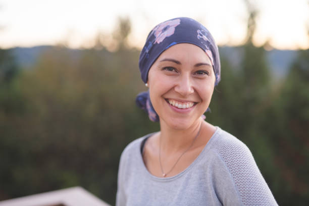

Acompañamiento
Brindamos contención a mujeres y familias en momentos difíciles.


Somos una fundación dedicada a acompañar a mujeres que atraviesan el cáncer de mama, brindando apoyo, contención e información a quienes más lo necesitan.
Quiero ayudarAlas Rosas nace con el objetivo de acompañar a mujeres y familias durante el proceso del cáncer de mama. Buscamos brindar ayuda emocional, orientación y esperanza.
Brindamos contención a mujeres y familias en momentos difíciles.
Compartimos información sobre prevención, controles y cuidado de la salud.
Buscamos ayudar a quienes necesitan asistencia durante su tratamiento.

“Me han cambiado la vida.”

“Es una gran ayuda en un momento muy difícil.”

“Me están acompañando económica y emocionalmente.”
Tu colaboración nos permite seguir acompañando a más mujeres y familias.
Donar ahora